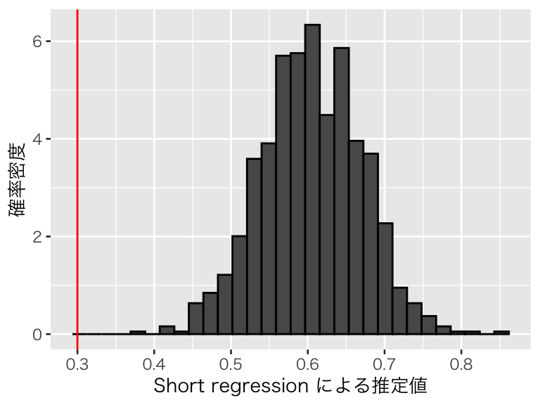
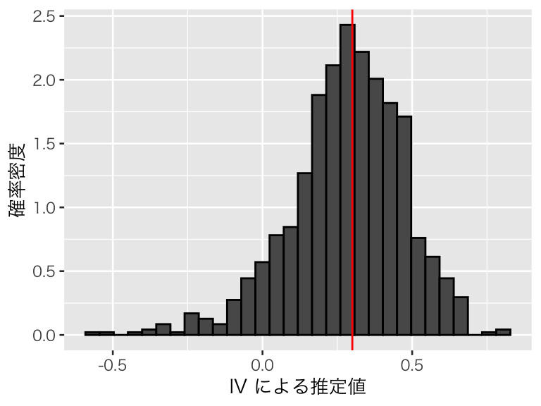
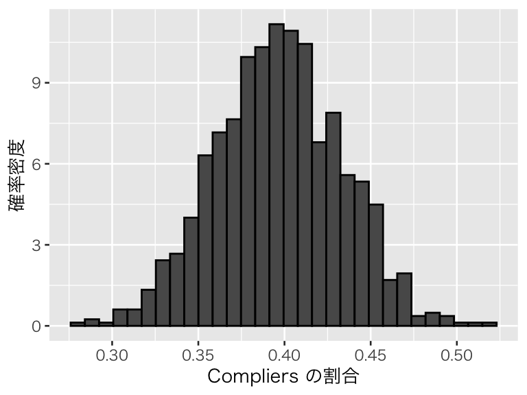
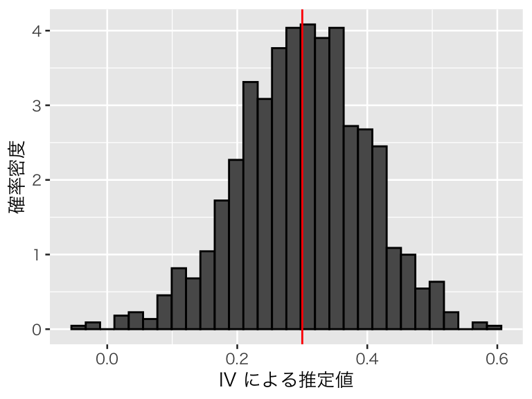
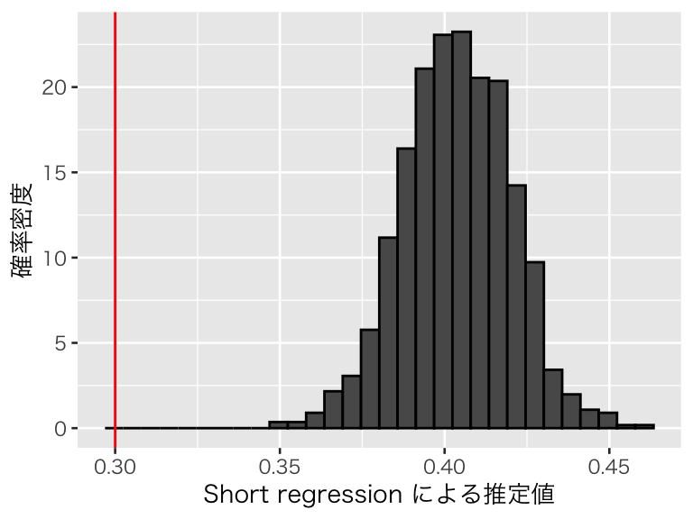
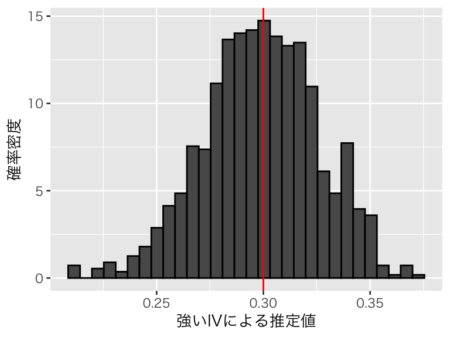
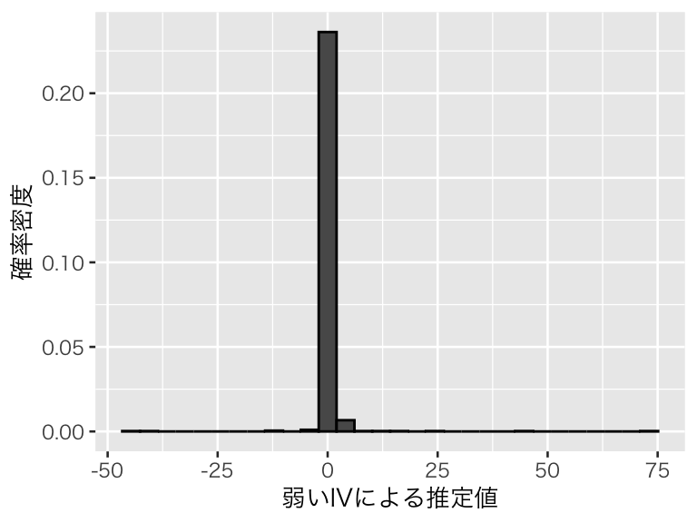

Topic 9 操作変数法
- トピック9の講義スライド (PDF, 1.2MB)
9.1 準備
9.1.1 予習、講義動画、実習課題
このトピックでやるべきことは、以下のとおりである。
- シラバス(PDFファイル) に記載されているトピック9の予習課題を読む。
- KUTLMS (Moodle) にあるトピック9の講義動画を視聴する。
- この資料の続きを読み、Rを使った実習を行うことで、操作変数法の使い方を学ぶ。
- 課題を提出する（選択制）。
9.1.2 Rパッケージの読み込み
必要なパッケージを読み込み、作図用の日本語フォントを設定する。
pacman::p_load(tidyverse, broom, haven, estimatr, AER)
theme_set(theme_gray(base_size = 10, base_family = "HiraginoSans-W3")) # macOS用
#theme_set(theme_gray(base_size = 10, base_family = "Meiryo")) # Windows用
#theme_set(theme_gray(base_size = 10, base_family = "IPAGothic")) # Ubuntu用
#showtext::showtext_auto() # Cloud用
#theme_set(theme_gray(base_size = 10, base_family = "noto")) # Cloud用9.2 操作変数のシミュレーション
まず、簡単なシミュレーションによって操作変数法の仕組みを理解しよう。
9.2.1 シミュレーションの設定
次の変数を考える。
- 結果変数 \(Y \in \mathbb{R}\)
- 処置変数（内生変数）\(D \in \{0, 1\}\)
- D0: \(Z = 0\) のときの潜在的処置 \(D(0)\)
- D1: \(Z = 1\) のときの潜在的処置 \(D(1)\)
- 未観測の交絡 \(A \in \mathbb{R}\)
- 操作変数 \(Z \in \{0, 1\}\)
これらの変数のうち、\(A\)、\(D(0)\)、\(D(1)\)は調査・観察データでは手に入らないが、シミュレーションでは確認できる変数である。
以下の手順でデータを生成する。
- \(A\) と \(Z\) をランダムに生成する。
- \(A\) の値を利用して、\(p(D(0) = 1)\) と \(p(D(1) = 1)\) を作る。これにより、\(D\)の値が\(A\)に依存することになる。
- 2で作った確率を利用して、ベルヌーイ試行で \(D(0)\) と \(D(1)\) を生成する。
- \(Z\) の値によって、\(D\) が \(D(0)\) になるか \(D(1)\)になるかを決める。
- \(Y\) を、\(A\) と\(D\) の値に基づいて決める。「正しい」処置効果は \(\beta\) とする。ここでは、
beta = 0.3と設定する。 - \(D(0)\) と \(D(1)\) の値を確認し、各個体を4つのタイプに分ける。
- c: complier
- a: always-taker
- n: never-taker
- d: defier
このルールによって、1つのデータセットを作ってみよう。
set.seed(2020-07-07)
N <- 200
beta <- 0.3
df <- tibble(A = rnorm(N, mean = 0, sd = 2),
Z = rbinom(N, size = 1, prob = 0.4),
prob_D0 = inv_logit(-0.8 + 0.4 * A),
prob_D1 = inv_logit(0.3 + 0.4 * A)) %>%
mutate(D0 = rbinom(N, size = 1, prob = prob_D0),
D1 = rbinom(N, size = 1, prob = prob_D1),
D = ifelse(Z == 1, D1, D0),
Y = beta * D + 0.2 * A + rnorm(N, mean = 0, sd = 0.2),
type = case_when(
D0 == 0 & D1 == 1 ~ "c",
D0 == 1 & D1 == 1 ~ "a",
D0 == 0 & D1 == 0 ~ "n",
TRUE ~ "d"),
type = factor(type, levels = c("c", "a", "n", "d")))実際には観測できない \(A\) を観測できれば、重回帰によって\(\beta\) を推定することができる。 やってみよう。
fit1 <- lm(Y ~ D + A, data = df)
tidy(fit1) %>%
filter(term == "D") %>%
select(estimate, std.error) %>%
knitr::kable(digits = 3)| estimate | std.error |
|---|---|
| 0.342 | 0.034 |
1つのデータセットだけでははっきりしたことはわからないが、この回帰分析で得られた推定値は、設定した処置効果である 0.3 からそれほど大きく離れていない。
しかし、実際には \(A\) を観測することはできないので、観測できる変数を使って単回帰を実行してみよう。
fit2 <- lm(Y ~ D, data = df)
tidy(fit2) %>%
filter(term == "D") %>%
select(estimate, std.error) %>%
knitr::kable(digits = 3)| estimate | std.error |
|---|---|
| 0.742 | 0.064 |
脱落変数バイアスにより、効果が過大推定されていることがわかる。
9.2.2 操作変数法
操作変数法によって、処置効果の推定を試みよう。 操作変数法を使うために、「defierが存在しない」という仮定が必要なので、まず defier を取り除く。現実のデータ分析では誰が defier かわからないので、この作業をすることは不可能であることに注意されたい。
次に、「操作変数と内生変数に相関がある」かどうか確かめる。検定によってこれを確かめるため、第1段階の回帰を行う。つまり、\(D\) を \(Z\) に回帰する。
| term | estimate | std.error | statistic | p.value |
|---|---|---|---|---|
| Z | 0.298 | 0.07 | 4.237 | 0 |
\(t\) 値 (statisitc) が 4.24 であり、目安である3.2を超えているので、弱くない相関があると判断する。（
ここでは共変量がない場合について考えているので、cor.test() でも同じ結果が出る。）
次に、除外制約を確認する必要がある。実際の研究においてはここが最も重要なポイントになりうるが、シミュレーションでは除外制約が成り立つことがわかっているので、この議論は省略する。
IVの公式を使って推定値を求めよう。
## [1] 0.23175このシミュレーションデータでは、効果が過小推定されている。しかし、単回帰によって得られた脱落変数バイアスを含む推定値よりは、真の値に近い推定値が得られた。
Defier がいる場合にはどうなるだろうか。
## [1] 0.179756Defier がいないという仮定が破られた結果、効果がさらに過小に推定されている。
9.2.3 シミュレーションの繰り返し
上のシミュレーションを繰り返せるように、関数を作ろう。
iv_sim <- function(N = 200, beta = 0.3) {
df <- tibble(A = rnorm(N, mean = 0, sd = 2),
Z = rbinom(N, size = 1, prob = 0.4),
prob_D0 = inv_logit(-0.8 + 0.4 * A),
prob_D1 = inv_logit(0.3 + 0.4 * A)) %>%
mutate(D0 = rbinom(N, size = 1, prob = prob_D0),
D1 = rbinom(N, size = 1, prob = prob_D1),
D = ifelse(Z == 1, D1, D0),
Y = beta * D + 0.2 * A + rnorm(N, mean = 0, sd = 0.2),
type = case_when(
D0 == 0 & D1 == 1 ~ "c",
D0 == 1 & D1 == 1 ~ "a",
D0 == 0 & D1 == 0 ~ "n",
TRUE ~ "d"),
type = factor(type, levels = c("c", "a", "n", "d")))
df_sub <- df %>% filter(type != "d")
reg_short <- with(df_sub, cov(Y, D) / var(D))
iv <- with(df_sub, cov(Y, Z) / cov(D, Z))
prop_c <- mean(df_sub$type == "c") # compliers の割合
return(c(reg_s = reg_short,
iv = iv,
prop_c = prop_c))
}この関数を1回だけ使ってみる。
## reg_s iv prop_c
## 0.5618581 0.2117467 0.4566474reg_s は short regression による推定値、iv は IV による推定値、prop_c はデータセットに含まれる complier の割合（ただし、defier の割合は0）である。
この関数を使って1000回シミュレーションを行う。
シミュレーション結果をデータフレーム (tibble) に変換する。
まず、short regression の推定結果を可視化する。
p_short <- ggplot(p_df, aes(x = reg_s, y = after_stat(density))) +
geom_histogram(color = "black") +
geom_vline(xintercept = 0.3, color = "red") +
labs(x = "Short regression による推定値", y = "確率密度")
plot(p_short)
脱落変数バイアスによって処置効果が過大推定されており、設定した値である0.3 を推定できていないことがわかる。
次に、IVによる推定値を確認してみよう。
p_iv <- ggplot(p_df, aes(x = iv, y = after_stat(density))) +
geom_histogram(color = "black") +
geom_vline(xintercept = 0.3, color = "red") +
labs(x = "IV による推定値", y = "確率密度")
plot(p_iv)
平均すれば、処置効果をうまく推定できていることがわかる。このシミュレーションにおける推定値の平均値は、
## [1] 0.2826947であり、0.3 に近い値が得られている。また、推定値の標準偏差（シミュレーションによる標準誤差）は、
## [1] 0.1886498であり、推定値の大きさに対してばらつきが大きく、推定の不確実性が大きいことがわかる。
IV が推定対象とするのは complier についての LATE なので、データセットに占める complier の割合が小さいと、推定が影響を受けるかもしれない。このシミュレーションにおける complier の割合を図示しよう。
p_compliers <- ggplot(p_df, aes(x = prop_c, y = after_stat(density))) +
geom_histogram(color = "black") +
labs(x = "Compliers の割合", y = "確率密度")
plot(p_compliers)
このように、complier の割合があまり大きくないデータが多かったことがわかる。
Complier の割合が大きいと、推定は安定するだろうか。Complier の割合が大きくなるようにシミュレーションを調整し、確認してみよう。comp で complier の割合の下限を設定できるようにする。また、complier になりやすいように prob_D0 と prob_D1 の生成法を修正する（注意：comp の値を大きくし過ぎると、シミュレーションに時間がかかる）。
iv_sim2 <- function(N = 200, beta = 0.3, comp = 0.6) {
prop_c <- 0
while (prop_c < comp) {
df <- tibble(A = rnorm(N, mean = 0, sd = 2),
Z = rbinom(N, size = 1, prob = 0.4),
prob_D0 = inv_logit(-1.5 + 0.4 * A),
prob_D1 = inv_logit(1.2 + 0.4 * A)) %>%
mutate(D0 = rbinom(N, size = 1, prob = prob_D0),
D1 = rbinom(N, size = 1, prob = prob_D1),
D = ifelse(Z == 1, D1, D0),
Y = beta * D + 0.2 * A + rnorm(N, mean = 0, sd = 0.1),
type = case_when(
D0 == 0 & D1 == 1 ~ "c",
D0 == 1 & D1 == 1 ~ "a",
D0 == 0 & D1 == 0 ~ "n",
TRUE ~ "d"),
type = factor(type, levels = c("c", "a", "n", "d")))
df_sub <- df %>% filter(type != "d")
prop_c <- mean(df_sub$type == "c") # compliers の割合
}
reg_short <- with(df_sub, cov(Y, D) / var(D))
iv <- with(df_sub, cov(Y, Z) / cov(D, Z))
return(c(reg_s = reg_short, iv = iv, prop_c = prop_c))
}この関数を1回だけ使ってみる。
## reg_s iv prop_c
## 0.5186895 0.2664188 0.60732981000回シミュレーションを行う。
シミュレーションの結果をデータフレーム (tibble) に変換する。
Complier の割合を可視化する。
p_compliers2 <- ggplot(p_df2, aes(x = prop_c, y = after_stat(density))) +
geom_histogram(color = "black") +
labs(x = "Compliers の割合", y = "確率密度")
plot(p_compliers2)
Complierの割合が0.6以上になっていることがわかる。
IVの推定値の分布を確認しよう。
p_iv2 <- ggplot(p_df2, aes(x = iv, y = after_stat(density))) +
geom_histogram(color = "black") +
geom_vline(xintercept = 0.3, color = "red") +
labs(x = "IV による推定値", y = "確率密度")
plot(p_iv2)
平均すれば、処置効果をうまく推定できていることがわかる。このシミュレーションにおける推定値の平均値は、
## [1] 0.2995411であり、0.3 に近い値が得られている。また、推定値の標準偏差（シミュレーションによる標準誤差）は、
## [1] 0.09758286であり、complierの割合が小さい場合に比べ、推定の不確実性が小さくなったことがわかる。IV推定では complier の LATE を推定するため、分析するデータのなかに complier が多数含まれていることが重要であることが示唆される。観測個体に complier が多いかどうかをデータから確かめることはできないので、complier が多いと信じられる理論的な根拠が必要である。
9.2.4 弱い操作変数
続いて、弱い操作変数を使うとどのような問題が生じるか、シミュレーションで確かめよう。 以下の変数を考える。
- 結果変数 \(Y \in \mathbb{R}\)
- 処置変数（内生変数）\(D \in \mathbb{R}\)
- 未観測の交絡 \(A \in \mathbb{R}\)
- 操作変数1（\(D\)と強い相関） \(Z_s \in \mathbb{R}\)
- 操作変数2（\(D\)と弱い相関） \(Z_w \in \mathbb{R}\)
以下の手順でデータを生成する。
- \(A\) と \(Z_s\)、\(Z_w\) をランダムに生成する。
- \(A\) と \(Z_s\)、\(Z_w\) の値を利用して、\(D\) の値を決める。
- \(Y\) を、\(A\) と\(D\) の値に基づいて決める。「正しい」処置効果は \(\beta\) とする。ここでは、
beta = 0.3と設定する。
上記3の手順にある通り、このデータ生成仮定では、どちらの操作変数も除外制約を満たしている。よって、「理論的には」操作変数による推定がうまくいくはずである。しかし、実際には弱い操作変数が問題であることを確認しよう。ただし、defier は存在しないと仮定する。
sim_weak <- function(N = 200, beta = 0.3) {
df <- tibble(A = rnorm(N, mean = 0, sd = 2),
Zs = rnorm(N, mean = 0, sd = 2),
Zw = rnorm(N, mean = 0, sd = 2)) %>%
mutate(D = 0.4 * A + 0.6 * Zs + 0.05 * Zw + rnorm(N),
Y = beta * D + 0.2 * A + rnorm(N, mean = 0, sd = 0.2))
reg_short <- with(df, cov(Y, D) / var(D))
cor_s <- with(df, cor(Y, Zs))
iv_s <- with(df, cov(Y, Zs) / cov(D, Zs))
cor_w <- with(df, cor(Y, Zw))
iv_w <- with(df, cov(Y, Zw) / cov(D, Zw))
return(c(reg_s = reg_short,
cor_strong = cor_s,
iv_strong = iv_s,
cor_weak = cor_w,
iv_weak = iv_w))
}この関数を1回だけ使ってみる。
## reg_s cor_strong iv_strong cor_weak iv_weak
## 0.44458812 0.40073227 0.32185842 0.02289725 0.70974011この関数で、short regression の推定値 (reg_s)、D と Zs の相関係数 (cor_strong)、Zs を使ったIV推定値 (iv_strong)、D と Zw の相関係数 (cor_weak)、Zw を使ったIV推定値 (iv_weak) が得られる。
これを1000回繰り返そう。
シミュレーションの結果をデータフレーム (tibble) に変換する。
まず、short regression の推定値を確認しよう。
p_short3 <- ggplot(p_df_w, aes(x = reg_s, y = after_stat(density))) +
geom_histogram(color = "black") +
geom_vline(xintercept = 0.3, color = "red") +
labs(x = "Short regression による推定値", y = "確率密度")
plot(p_short3)
やはり、short regression は脱落変数バイアスによって因果効果を過大推定している。推定値の平均値は、
## [1] 0.403764次に、（強い）操作変数 Zs の推定値を確認しよう。推定値の前に、D と Zs の相関係数を確認する。
## [1] 0.4390823平均すると 0.4 程度の相関があることがわかる。IV推定値の分布を可視化する。
p_strong <- ggplot(p_df_w, aes(x = iv_strong, y = after_stat(density))) +
geom_histogram(color = "black") +
geom_vline(xintercept = 0.3, color = "red") +
labs(x = "強いIVによる推定値", y = "確率密度")
plot(p_strong)
平均的には推定がうまくいっているようだ。推定値の平均値は、
## [1] 0.2988726で 0.3 に近い。推定値のばらつきは、
## [1] 0.0268729であり、推定値の大きさと比較して不確実性もそれほど大きくない。
弱い操作変数はどうだろうか？まず、D と Zw の相関係数を確認してみよう。
## [1] 0.03684498平均すると 0.04 程度の非常に弱い相関しかないことがわかる。IV推定値の分布を可視化する。
p_weak <- ggplot(p_df_w, aes(x = iv_weak, y = after_stat(density))) +
geom_histogram(color = "black") +
labs(x = "弱いIVによる推定値", y = "確率密度")
plot(p_weak)
分布範囲が非常に広く、ヒストグラムではうまく可視化できない（範囲が広いことはわかる）。 推定の平均値は、
## [1] 0.4621742中央値は、
## [1] 0.3661183である。中央値は0.3からそれほど大きく離れていないが、平均的には効果を過大推定している。Short regression の推定の平均値が 0.4 なので、弱い操作変数によるIV推定値のバイアスは、short regression のバイアスよりも大きくなってしまっている。
また、推定のばらつきは、
## [1] 3.594002である。推定値の大きさに対して不確実性が非常に大きく、推定がまったく信頼できないことがわかる。
このように、弱い操作変数を使うと推定が不安定になり、交絡を無視した単回帰よりもむしろバイアスが大きい推定値を得る可能性が高くなってしまう。よって、弱い操作変数を使ってはいけない。
9.3 操作変数を利用した MDVE の分析
9.3.1 Angrist and Pischke (2009) の例
Angrist and Pischke (2009) の第3章にある、ミネアポリス家庭内暴力実験 (Minneapolis Domestic Violence Experiment; MDVE) の例を見てみよう。実験の詳細については Angrist and Pischke (2009) の3.2節と Sherman and Berk (1984) を参照されたい。
この実験は、家庭内暴力 (DV) の通報があったとき（かつ、特定の条件を満たす場合）に警官が取る対応をランダムに決めることにより、警官の対応がDVの再発に与える影響を調査しようとしたものである。警官は、DVの被疑者を「逮捕する (arrest)」か、「被害者から8時間隔離する (seprate)」か、DVをやめるように「助言する (advise)」かの3つの選択肢のうちの1つをランダムに割付けられる。
すべての警官がランダムに決められた通りの行動をとるなら、この実験は RCT として分析することができる。しかし、 実際にはすべての警官が割付に従うわけではない。例えば、「助言」を割付けらけれたとしても、現場で被疑者が暴れて警官に殴りかかってきたような場合や、逮捕しないと明らかにDVを繰り返しそうな場合には、逮捕せざるを得ないだろう。よって、実際に警官がとった行動は、ランダムではない。そのため、DVを再発しそうな被疑者ほど逮捕されやすいというセレクションバイアスが存在すると考えられるので、この「実験」は “RCT” ではない。
そこで、実際に警官がとった行動を内生変数、ランダム割付を操作変数として、警官の行動がDVの再発に与える因果効果を推定してみよう。
9.3.2 データの準備
データは、Mastering ’Metrics から入手できる。
download.file() でファイルがうまくダウンロードできない場合は、ウェブブラウザで指定のURLにアクセスして手動でデータを入手する。
download.file(url = "http://masteringmetrics.com/wp-content/uploads/2015/02/mdve.dta",
dest = "data/mdve.dta")Stata形式のデータなので、haven::read_dta() で読み込む。
実験でランダムに割付られた処置は、T_RANDOMに記録されている。T_RANDOM が1なら「逮捕」、2なら「助言」、3なら「隔離」が割付けられた行動である。 それに対し、警官が実際にとった行動は、T_FINAL に記録されている。T_FINAL の値が1, 2, 3の場合は、T_RANDOM と同じ意味である。これらに加え T_FINAL には4があり、「その他」を意味する。ランダム割付と実際の行動の関係を確認してみよう。
## T_FINAL
## T_RANDOM 1 2 3 4
## 1 91 0 1 1
## 2 19 84 5 2
## 3 26 5 83 13この表から、警官は実験の割付どおりに行動したとは限らないことがわかる。よって、この実験データを “RCT” の結果として分析することはできない。
しかし、実験の割付はほとんどの場合守られているので、操作変数と内生変数の間には相関がある。また、割付が実際の警官の行動（内生変数）以外の経路で結果変数に影響を与えるとは考えにくいので、除外制約も満たしているといえそうである。
ここでは、Angrist and Pischke (2009) に倣い、操作変数と実際の処置を、「逮捕しないこと（大目に見る; coddling）」を表すダミー変数に変換して分析する。これは、「助言」または「隔離」のときに1をとり、「逮捕」の時に0をとるダミー変数である。また、実際の処置（T_FINAL）が「その他」のものは除外する。
myd <- MDVE %>%
filter(T_FINAL != 4) %>%
mutate(Z = ifelse(T_RANDOM != 1, 1, 0),
D = ifelse(T_FINAL != 1, 1, 0))上で読み込んだデータセットには結果変数である「DVの再発」を示すダミー変数がない。そこで、 Berk and Sherman (1988) の表2 (p.72) を基に結果変数を再構成する（このコードは理解しなくても良い）。
Y_ar_ar <- 63 * 0.11 + 28 * 0.11
Y_ar_ad <- 0
Y_ar_sp <- 1 * 0 + 0
Y_ad_ar <- 18 * 0.17 + 0
Y_ad_ad <- 45 * 0.16 + 39 * 0.21
Y_ad_sp <- 4 * 0.5 + 2 * 0.5
Y_sp_ar <- 22 * 0.18 + 4 * 0.25
Y_sp_ad <- 2 * 0.5 + 3 * 0
Y_sp_sp <- 40 * 0.23 + 42 * 0.26
n_ar_ar <- with(myd, sum(T_RANDOM == 1 & T_FINAL == 1))
n_ar_ad <- with(myd, sum(T_RANDOM == 1 & T_FINAL == 2))
n_ar_sp <- with(myd, sum(T_RANDOM == 1 & T_FINAL == 3))
n_ad_ar <- with(myd, sum(T_RANDOM == 2 & T_FINAL == 1))
n_ad_ad <- with(myd, sum(T_RANDOM == 2 & T_FINAL == 2))
n_ad_sp <- with(myd, sum(T_RANDOM == 2 & T_FINAL == 3))
n_sp_ar <- with(myd, sum(T_RANDOM == 3 & T_FINAL == 1))
n_sp_ad <- with(myd, sum(T_RANDOM == 3 & T_FINAL == 2))
n_sp_sp <- with(myd, sum(T_RANDOM == 3 & T_FINAL == 3))
Y_ar_ar <- c(rep(1, round(Y_ar_ar)), rep(0, n_ar_ar - round(Y_ar_ar)))
Y_ar_ad <- c(rep(1, round(Y_ar_ad)), rep(0, n_ar_ad - round(Y_ar_ad)))
Y_ar_sp <- c(rep(1, round(Y_ar_sp)), rep(0, n_ar_sp - round(Y_ar_sp)))
Y_ad_ar <- c(rep(1, round(Y_ad_ar)), rep(0, n_ad_ar - round(Y_ad_ar)))
Y_ad_ad <- c(rep(1, round(Y_ad_ad)), rep(0, n_ad_ad - round(Y_ad_ad)))
Y_ad_sp <- c(rep(1, round(Y_ad_sp)), rep(0, n_ad_sp - round(Y_ad_sp)))
Y_sp_ar <- c(rep(1, round(Y_sp_ar)), rep(0, n_sp_ar - round(Y_sp_ar)))
Y_sp_ad <- c(rep(1, round(Y_sp_ad)), rep(0, n_sp_ad - round(Y_sp_ad)))
Y_sp_sp <- c(rep(1, round(Y_sp_sp)), rep(0, n_sp_sp - round(Y_sp_sp)))
myd <- myd %>%
arrange(T_RANDOM, T_FINAL) %>%
mutate(Y = c(Y_ar_ar, Y_ar_ad, Y_ar_sp,
Y_ad_ar, Y_ad_ad, Y_ad_sp,
Y_sp_ar, Y_sp_ad, Y_sp_sp))Angrist and Pischke (2009) によると「DVの再発」率は18%である。再構築した結果変数を使うと、
## [1] 0.1815287となる。このデータで分析を進めてみよう。
9.3.3 Short Regression
まず、\(Y\) を実際の警官の行動である \(D\) に回帰してみよう。
dv_0 <- lm(Y ~ D, data = myd)
tidy(dv_0) %>%
filter(term == "D") %>%
select(term, estimate, std.error) %>%
knitr::kable(digits = 3)| term | estimate | std.error |
|---|---|---|
| D | 0.087 | 0.044 |
逮捕しない（大目に見る）と、DVの再発率が 8.7 ポイント上昇するという推定結果が得られた。（Angrist (2006) の Table 3 (p.34) と同じ結果である。）
しかし、この結果をそのまま「逮捕しないこと」の効果だと考えることはできない。警官の行動はランダムに決まっていない（ランダムに決めた行動から逸脱しているケースがある）ので、セレクションバイアスの存在が疑われる。
そこで、以下では操作変数を使って処置効果の推定を試みる。
9.3.4 操作変数法による推定
9.3.4.1 相関の確認
念のため、操作変数と内生変数の相関の強さを確かめておこう。そのために、第1段階の回帰を行う。
iv_first <- lm(D ~ Z, data = myd)
tidy(iv_first) %>%
filter(term == "Z") %>%
knitr::kable(digits = 3)| term | estimate | std.error | statistic | p.value |
|---|---|---|---|---|
| Z | 0.786 | 0.043 | 18.451 | 0 |
\(t\) 値が18.45 であり、目安である3.2を超えているので、弱くない相関があると判断する。
9.3.4.2 IV公式
まず、IV 公式によって局所的平均処置効果 (LATE) を推定してみよう。
## [1] 0.1309924推定値は 0.13 であり、short regression の推定値よりも大きい（Angrist (2006) では推定値が0.140 である）。単純に観察された処置（内生変数）\(D\) に回帰すると、効果が過小推定されるということが示唆される。
実際にやることは IV 公式とまったく同じだが、念のために第1段階の回帰（既に実行済み）と誘導型回帰を行うことで、IV推定値を求めてみよう。
## Z
## 0.1309924（当然だが）同じ結果が得られた。
9.3.4.3 2SLS
次に、2段階回帰 (2SLS, TSLS) で推定値を求めてみよう。上で実行した第1段階の回帰の結果から、\(D\)の予測値 \(\hat{D}\) を求める。
第2段階として、\(Y\) を \(\hat{D}\) に回帰する。
iv_second <- lm(Y ~ D_hat, data = myd)
tidy(iv_second) %>%
filter(term == "D_hat") %>%
select(estimate)## # A tibble: 1 x 1
## estimate
## <dbl>
## 1 0.1312SLS でも、IV公式と同じ推定値が得られることがわかる。
9.3.4.4 IV 用の関数を使う
推定値を得るだけなら、IV公式や2SLS を使えば良い。しかし、それらの方法では推定の不確実性を表す標準誤差を得ることができない（一般に、2SLS で得られる標準誤差は正しくない）。よって、実際に操作変数法を使う場合には、操作変数用に用意された関数を用いたほうが良い（もちろん、手動で正しい標準誤差を求めても良い）。
ここでは、estimatr パッケージの iv_robust() 関数を使う。推定する formula の途中に | を書き、その左側に内生変数を、右側に操作変数を書く。MDVE の例では、次のようにする。（se_type は指定しなくても良いが、そうすると標準誤差の計算方法が変わり、後で紹介する AER::ivreg() と異なる結果になる。）
iv_fit1 <- iv_robust(Y ~ D | Z, data = myd,
se_type = "classical")
tidy(iv_fit1) %>%
filter(term == "D") %>%
select(term, estimate, std.error) %>%
knitr::kable(digits = 3)| term | estimate | std.error |
|---|---|---|
| D | 0.131 | 0.061 |
上と同じ推定結果が得られた。標準誤差は0.061 であり、推定された効果が5%水準で統計的に有意であることがわかる。
また、AER パッケージのivreg() 関数を使うこともできる。
iv_fit2 <- ivreg(Y ~ D | Z, data = myd)
tidy(iv_fit2) %>%
filter(term == "D") %>%
select(term, estimate, std.error) %>%
knitr::kable(digits = 3)| term | estimate | std.error |
|---|---|---|
| D | 0.131 | 0.061 |
先ほどとまったく同じ結果が得られた。
どちらの関数を使う場合も、共変量がある場合には | の 両側に共変量を加える。例えば、X1 と X2 という2つの共変量がある場合には、ivreg(Y ~ D + X1 + X2 | X1 + X2 + Z, data = myd) のように書く。
9.4 トピック9の課題
タバコの価格は、タバコの売り上げにどのような影響を与えるだろうか。 この疑問に関して、AER パッケージの CigarettesSW データを利用して、以下の問いに答えなさい。 このデータは、以下のようにして取り出せる。
また、このデータセットに含まれる主な変数は、
- packs：1人当たりのタバコの購入数（単位：箱）
- price：タバコ1箱の税込価格
- cpi：CPI（消費者物価指数）
- tax：平均的な税額
- taxs：消費税
である。データの詳細は、help(CigarettesSW) で確認できる。
課題で実行する内容：
- タバコの売り上げ (packs) をタバコの価格 (price) に回帰するだけでは、価格が需要（売り上げ）に与える効果を推定できないと考えられる理由を説明しなさい。
- 以下の変数を作りなさい
- タバコの相対価格： price / cpi
- 相対化した消費税： (taxs - tax) / cpi
- タバコの売り上げを結果変数、タバコの相対価格（2で作ったもの）を内生変数、消費税（2で作ったもの）を操作変数として、タバコの価格がタバコの売り上げに与える効果を推定しなさい。
- ただし、対象は1995年 (year == “1995”) とする。
- 推定する前に、必要な変数変換を実行すること（ヒント：需要の価格弾力性を調べるためには、どのような変換が有効だろうか？）
- 単に推定値を示すだけでなく、操作変数法の仮定についても議論すること。
- タバコの売り上げをタバコの相対価格に回帰しなさい。
- ただし、3と同様に変数変換すること
- 3と4の結果を比較し、どのようなことがわかるか説明しなさい。
注意：
- 課題レポートは R Markdown で作成し、PDF に knit して提出すること。
- 提出するファイル：metrics_hw09_LastFirst.pdf
- 提出方法：Slack のダイレクトメッセージで提出。
- 提出期限：2020年7月30日（木）正午（日本時間）
- トピック6, 8, 9 の課題からどれか1つを選んで提出
- どれを選んでも良いが、提出期限が異なるので注意。
- 2つ以上提出した場合、最も評価が高いものを成績評価の対象とする。
参考文献
Angrist, Joshua D. 2006. “Instrumental Variables Methods in Experimental Criminological Research: What, Why and How.” Journal of Experimental Criminology 2: 23–44. https://doi.org/10.1007/s11292-005-5126-x.
Angrist, Joshua D., and Jörn-Steffen Pischke. 2009. Mostly Harmless Econometrics: An Empiricist’s Companion. Princeton: Princeton University Press.
Berk, Richard A., and Lawrence W. Sherman. 1988. “Police Responses to Family Violence Incidents.” Journal of the American Statistical Association 83: 70–76. https://doi.org/10.1080/01621459.1988.10478566.
Sherman, Lawrence W., and Richard A. Berk. 1984. “THe Specific Deterrent Effects of Arrest Fro Domestic Assault.” American Sociological Review 49 (2): 261–72. http://masteringmetrics.com/wp-content/uploads/2015/02/Sherman_Berk_1984.pdf.